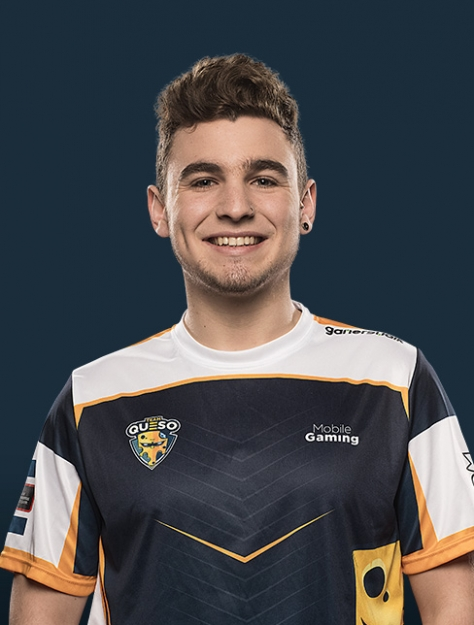
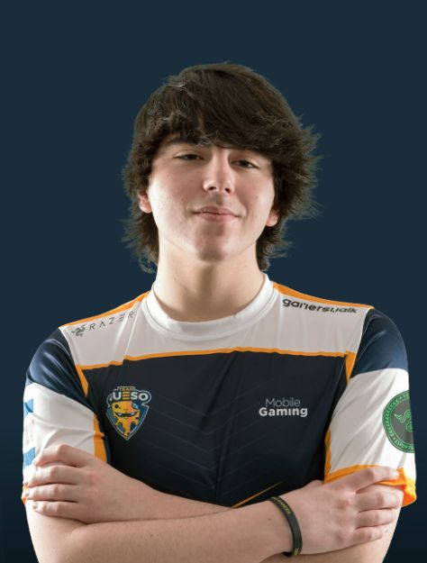
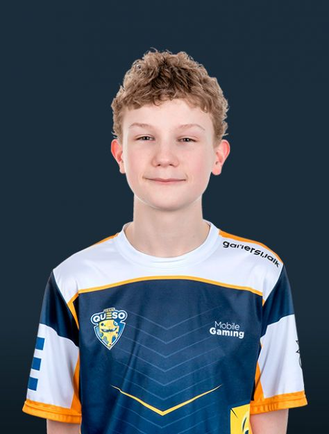

Integrantes del equipo

Jesús “Soking” Varela Ruíz, jugador español de Clash Royale actualmente compitiendo para Team Queso. Uno de los estandartes de la escena nacional que acumula grandes éxitos tanto a nivel individual como colectivo, posiblemente el jugador español más destacado.

Beñat “Beniju” Juarros, jugador español de Clash Royale actualmente compitiendo para Team Queso.

Pere “Cuchi Cuu” Manel Rodríguez, jugador español de Clash Royale actualmente compitiendo para Team Queso con los que acumulan un buen palmarés individual.

Daniel "Saint Belikin" Rean, jugador español de Clash Royale actualmente compitiendo para Team Queso.